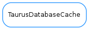

TaurusDatabaseCache¶

-
class
TaurusDatabaseCache(db)[source]¶ Bases:
object-
db¶
-
deviceTree()[source]¶ Returns a tree container with all devices in three levels: domain, family and member
Return type: :class:~`TaurusDevTree` Returns: a tree containning all devices
-
getClassNames()[source]¶ Returns a list of registered device classes
Return type: :class:~`sequence` <:class:~`str`> Returns: a sequence with all registered device classes
-
getDevice(name)[source]¶ Returns a
taurus.core.taurusdatabase.TaurusDevInfoobject with information about the given device nameParameters: name (:class:~`str`) – the device name Return type: :class:~`TaurusDevInfo` Returns: information about the device
-
getDeviceNames()[source]¶ Returns a list of registered device names
Return type: :class:~`sequence` <:class:~`str`> Returns: a sequence with all registered device names
-
getServerNames()[source]¶ Returns a list of registered server names
Return type: :class:~`sequence` <:class:~`str`> Returns: a sequence with all registered server names
-